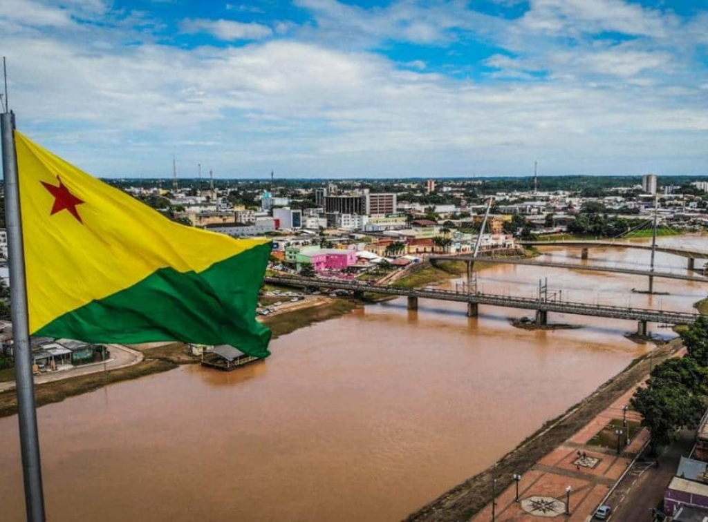

Acre é um estado localizado na Região Norte do Brasil, fazendo fronteira com a Bolívia e o Peru. Sua capital é Rio Branco. O estado possui grande parte de seu território coberto pela Floresta Amazônica, apresentando clima quente e úmido durante quase todo o ano. A região é rica em rios, fauna e vegetação, além de possuir diversas reservas ambientais e terras indígenas. A economia acreana foi marcada historicamente pelo extrativismo, principalmente da borracha e da castanha-do-pará, atividades muito importantes durante o ciclo da borracha. Atualmente, a agropecuária, o comércio e os serviços também contribuem para a economia do estado.
